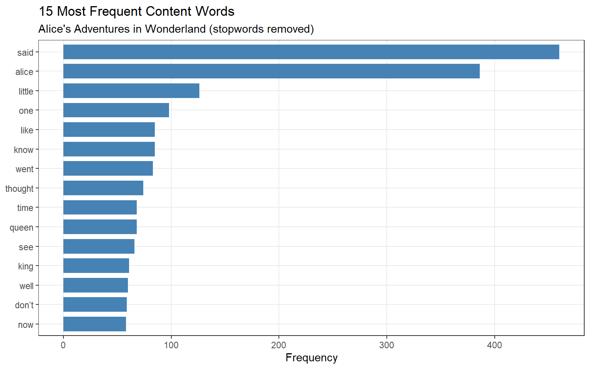
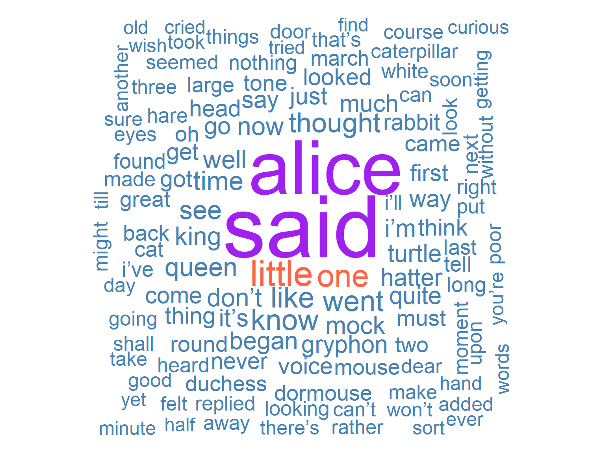
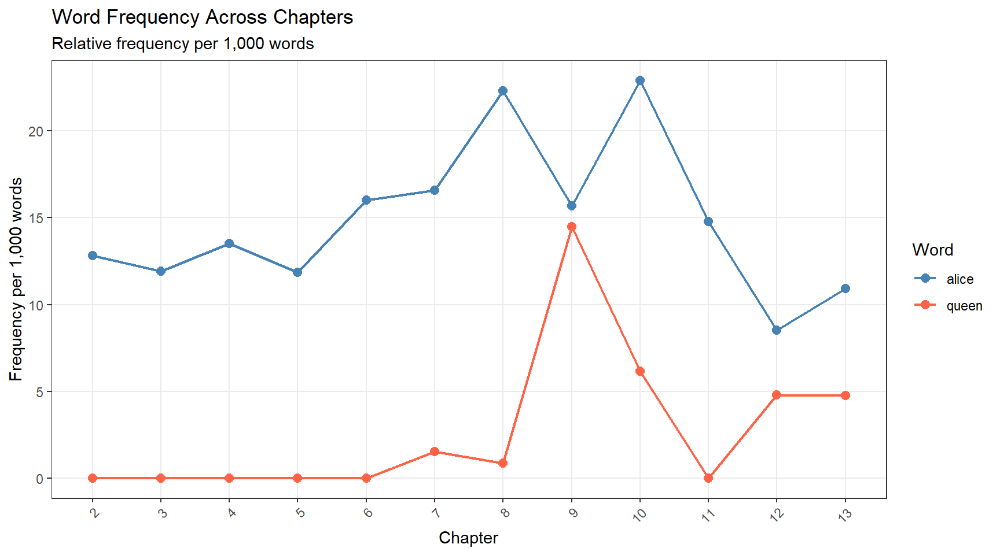
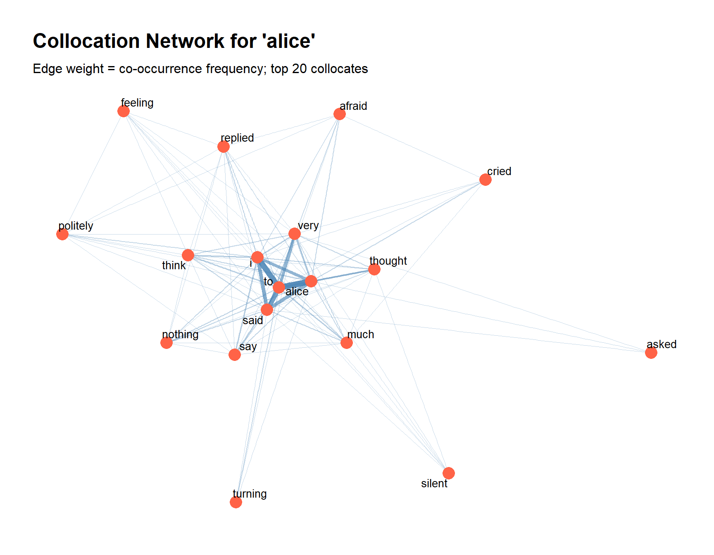
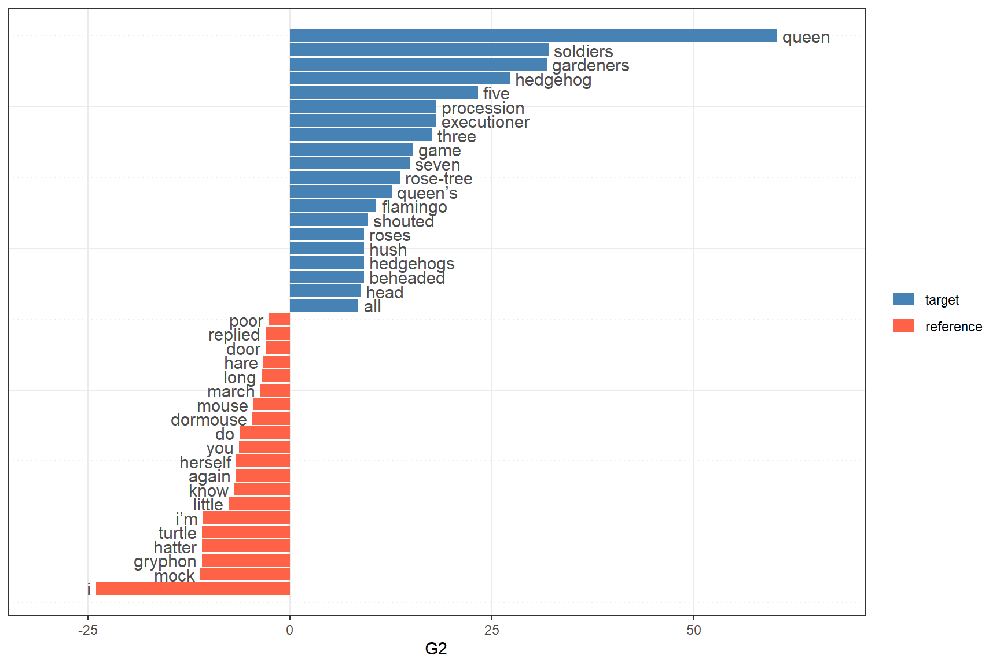

# Core text analysis framework
install.packages("quanteda")
install.packages("quanteda.textplots")
install.packages("quanteda.textstats")
# Data manipulation and visualisation
install.packages("dplyr")
install.packages("tidyr")
install.packages("stringr")
install.packages("ggplot2")
# Text utilities
install.packages("tidytext")
install.packages("tokenizers")
install.packages("flextable")
install.packages("here")
install.packages("checkdown") 9 Text Analysis: Practical Implementation in R
10 Introduction
This chapter focuses on practical implementation: how to apply selected text analysis methods in R using real corpus data. Each section introduces a method, explains the key decisions involved, demonstrates the code, and provides exercises to consolidate understanding.
The methods covered — concordancing, word frequency analysis, collocation analysis, and keyword analysis — represent the core quantitative techniques of corpus-based text analysis. They are foundational: most more advanced analyses (topic modelling, stylometry, sentiment analysis) build upon or assume familiarity with these basic tools.
WarningTODO: prerequisite content gap
The original source material for this chapter is “Part 2” of a two-part LADAL series; “Part 1” (concepts and theoretical foundations of text analysis) is not currently part of this book. Consider adding a short conceptual-foundations section before diving into implementation, or folding a condensed version into this chapter’s introduction.
NotePrerequisites
TipWhat This Chapter Covers
- Setup — packages, data, and the quanteda workflow
- Concordancing — KWIC searches, regex patterns, phrase searches
- Word Frequency Analysis — frequency lists, stopwords, visualisation, dispersion
- Collocation Analysis — co-occurrence matrices, association measures, network plots
- Keyword Analysis — comparing corpora, keyness metrics, interpretation
- Quick Reference — essential functions and workflow summary
11 Setup and Data
NoteSection Overview
What you’ll learn: How to install and load the required packages, and how the tutorial data is structured
Installing Packages
Loading Packages
library(quanteda) # core text analysis framework
library(quanteda.textplots) # visualisation (word clouds, networks)
library(quanteda.textstats) # statistical measures
library(dplyr) # data wrangling
library(tidyr) # data reshaping
library(stringr) # string processing
library(ggplot2) # plotting
library(tidytext) # tidy text mining
library(tokenizers) # sentence tokenisation
library(flextable) # formatted tables
library(here) # portable file paths
library(checkdown) # interactive exercises
library(quanteda.textstats) # for frequency analysis
TipLoading All Packages at the Top
Always load all required packages in a single code chunk at the top of your script. This makes dependencies immediately visible, ensures reproducibility (anyone running the script knows exactly what they need), and makes troubleshooting easier when a package is missing or out of date.
Tutorial Data
This tutorial uses Lewis Carroll’s Alice’s Adventures in Wonderland (1865), sourced from Project Gutenberg. The text is in the public domain and provides a convenient single-author literary corpus with recognisable content.
# Load Alice's Adventures in Wonderland from Project Gutenberg
# Using the gutenbergr package or pre-saved data
# For this tutorial we load a pre-saved plain text version
alice_path <- here::here("data", "alice.rda")
# Load the data (a character vector, one element per line)
if (file.exists(alice_path)) {
alice_raw <- readRDS(alice_path)
} else {
# If file not present, download directly
if (!requireNamespace("gutenbergr", quietly = TRUE)) {
install.packages("gutenbergr")
}
alice_raw <- gutenbergr::gutenberg_download(11)$text
}
# Quick inspection
length(alice_raw) [1] 2479head(alice_raw, 8) [1] "Alice’s Adventures in Wonderland"
[2] "by Lewis Carroll"
[3] "CHAPTER I."
[4] "Down the Rabbit-Hole"
[5] "Alice was beginning to get very tired of sitting by her sister on the"
[6] "bank, and of having nothing to do: once or twice she had peeped into"
[7] "the book her sister was reading, but it had no pictures or"
[8] "conversations in it, “and what is the use of a book,” thought Alice" Preparing the Text: Splitting into Chapters
For most analyses it is useful to work with the text segmented into meaningful units. We split Alice into chapters, which will serve as our “documents” in document-level analyses:
# Combine all lines, mark chapter boundaries, split into chapters
alice_chapters <- alice_raw |>
# Collapse to single string
paste0(collapse = " ") |>
# Insert a unique marker before each chapter heading
# The regex matches: "CHAPTER" + roman numerals (1-7 chars) + optional period
stringr::str_replace_all("(CHAPTER [XVI]{1,7}\\.{0,1}) ", "|||\\1 ") |>
# Lowercase the whole text
tolower() |>
# Split on the chapter boundary marker
stringr::str_split("\\|\\|\\|") |>
unlist() |>
# Remove any empty strings
(\(x) x[nzchar(stringr::str_trim(x))])()
# How many segments?
cat("Number of segments:", length(alice_chapters), "\n") Number of segments: 13 Chapter 2 begins: chapter i. down the rabbit-hole alice was beginning to get v ...
NoteRegex Explained:
(CHAPTER [XVI]{1,7}\\.{0,1})
-
CHAPTER— matches the literal word “CHAPTER”
-
[XVI]{1,7}— matches 1 to 7 Roman numeral characters (I, V, X, L)
-
\\.{0,1}— matches an optional period (the\\.escapes the dot;{0,1}makes it optional)
The whole group is wrapped in (...) for capture. We insert ||| before each match to create a unique split point. The {0,1} is equivalent to ? — using the explicit form makes the intent clearer.
The quanteda Workflow
The quanteda package provides a consistent workflow for corpus-based text analysis built around three core objects:
Object |
Created by |
Contains |
Used for |
|---|---|---|---|
corpus |
corpus() |
Document collection with metadata |
Storage, metadata management, subsetting |
tokens |
tokens() |
Tokenised text — a list of character vectors |
Concordancing, collocations, n-grams |
dfm |
dfm() |
Document-Feature Matrix: documents × word frequencies |
Frequency analysis, keywords, topic modelling, classification |
# Build the three core objects
alice_corpus <- quanteda::corpus(alice_chapters)
alice_tokens <- quanteda::tokens(alice_corpus,
remove_punct = FALSE,
remove_symbols = TRUE,
remove_numbers = FALSE)
alice_dfm <- alice_tokens |>
quanteda::tokens_remove(quanteda::stopwords("english")) |>
quanteda::dfm()
cat("Corpus: ", ndoc(alice_corpus), "documents\n") Corpus: 13 documentsTokens: 33571 total tokensDFM: 2753 unique features (after stopword removal)12 Concordancing
NoteSection Overview
What you’ll learn: How to extract KWIC (Key Word In Context) displays using quanteda::kwic(), search with regular expressions, and search for multi-word phrases
Key function: quanteda::kwic()
When to use it: At the start of any analysis involving a specific word or phrase; to inspect how terms are used; to extract authentic examples; to identify patterns that quantitative measures cannot reveal
Concordancing is the foundation of corpus-based text analysis. Before drawing quantitative conclusions about how a word behaves, it is essential to look at actual examples and understand the range of contexts in which the word appears. The kwic() function in quanteda produces KWIC displays directly:
Simple Word Search
# Concordance for "alice" — 5-word window on each side
kwic_alice <- quanteda::kwic(
x = alice_tokens,
pattern = "alice",
window = 5
) |>
as.data.frame() |>
dplyr::select(docname, pre, keyword, post)
# How many occurrences?
cat("Occurrences of 'alice':", nrow(kwic_alice), "\n") Occurrences of 'alice': 386 docname |
pre |
keyword |
post |
|---|---|---|---|
text2 |
i . down the rabbit-hole |
alice |
was beginning to get very |
text2 |
a book , ” thought |
alice |
“ without pictures or conversations |
text2 |
in that ; nor did |
alice |
think it so _very_ much |
text2 |
and then hurried on , |
alice |
started to her feet , |
text2 |
in another moment down went |
alice |
after it , never once |
text2 |
down , so suddenly that |
alice |
had not a moment to |
text2 |
“ well ! ” thought |
alice |
to herself , “ after |
text2 |
for , you see , |
alice |
had learnt several things of |
The docname column shows which chapter (document) the occurrence is from. pre is the left context, keyword is the search term, and post is the right context.
Pattern Matching with Regular Expressions
# Find all word forms beginning with "walk"
kwic_walk <- quanteda::kwic(
x = alice_tokens,
pattern = "walk.*",
window = 5,
valuetype = "regex" # enable regular expression matching
) |>
as.data.frame() |>
dplyr::select(docname, pre, keyword, post)
cat("Forms of 'walk':", nrow(kwic_walk), "\n") Forms of 'walk': 20 # What distinct forms were found?
unique(kwic_walk$keyword) [1] "walk" "walking" "walked" docname |
pre |
keyword |
post |
|---|---|---|---|
text2 |
out among the people that |
walk |
with their heads downward ! |
text2 |
to dream that she was |
walking |
hand in hand with dinah |
text2 |
trying every door , she |
walked |
sadly down the middle , |
text3 |
“ or perhaps they won’t |
walk |
the way i want to |
text4 |
mouse , getting up and |
walking |
away . “ you insult |
text4 |
its head impatiently , and |
walked |
a little quicker . “ |
text5 |
and get ready for your |
walk |
! ’ ‘ coming in |
text7 |
, “ if you only |
walk |
long enough . ” alice |
-
"glob"(default): simple wildcards —*matches any sequence,?matches any single character. E.g.,"walk*"matches walk, walks, walked
-
"regex": full regular expression syntax —"walk.*"matches the same
-
"fixed": exact string match —"walk"matches only walk, not walks
For corpus searches, "regex" is the most powerful but also requires care with escaping special characters.
Phrase Search
# Search for the multi-word phrase "poor alice"
kwic_pooralice <- quanteda::kwic(
x = alice_tokens,
pattern = quanteda::phrase("poor alice"), # phrase() enables multi-word search
window = 6
) |>
as.data.frame() |>
dplyr::select(docname, pre, keyword, post)
cat("Occurrences of 'poor alice':", nrow(kwic_pooralice), "\n") Occurrences of 'poor alice': 11 docname |
pre |
keyword |
post |
|---|---|---|---|
text2 |
would go through , ” thought |
poor alice |
, “ it would be of |
text2 |
once ; but , alas for |
poor alice |
! when she got to the |
text2 |
no use now , ” thought |
poor alice |
, “ to pretend to be |
text3 |
off to the garden door . |
poor alice |
! it was as much as |
text3 |
the right words , ” said |
poor alice |
, and her eyes filled with |
text4 |
didn’t mean it ! ” pleaded |
poor alice |
. “ but you’re so easily |
text4 |
any more ! ” and here |
poor alice |
began to cry again , for |
text5 |
pleasanter at home , ” thought |
poor alice |
, “ when one wasn’t always |
text6 |
used to it ! ” pleaded |
poor alice |
in a piteous tone . and |
text8 |
. ” this answer so confused |
poor alice |
, that she let the dormouse |
text10 |
both sat silent and looked at |
poor alice |
, who felt ready to sink |
TipWhen to Use
phrase() vs. a Plain Pattern
Without phrase(), a pattern like "poor alice" would be interpreted as two separate patterns. phrase() tells quanteda to look for the words adjacent to each other as a sequence. Use phrase() for:
- Multi-word expressions and idioms (by and large, make a decision)
- Named entities (Mad Hatter, White Rabbit)
- Fixed collocations where word order matters
Sorting Concordances for Pattern Analysis
Sorting KWIC output by the left or right context makes patterns more visible:
# Sort by one word to the right of the keyword (R1)
# This groups concordances by what immediately follows "said"
kwic_said <- quanteda::kwic(
x = alice_tokens,
pattern = "said",
window = 4
) |>
as.data.frame() |>
dplyr::select(docname, pre, keyword, post) |>
# Extract the first word of the right context
dplyr::mutate(R1 = stringr::word(post, 1)) |>
# Sort by R1 to see what typically follows "said"
dplyr::arrange(R1)
# Most common words following "said"
kwic_said |>
dplyr::count(R1, sort = TRUE) |>
head(10) R1 n
1 the 207
2 alice 115
3 to 39
4 , 28
5 in 7
6 nothing 6
7 this 6
8 “ 5
9 . 4
10 : 3R1 |
n |
|---|---|
the |
207 |
alice |
115 |
to |
39 |
, |
28 |
in |
7 |
nothing |
6 |
this |
6 |
“ |
5 |
. |
4 |
: |
3 |
Sorting reveals a pattern immediately: “said” is most often followed by the character names (alice, the) — the classic dialogue attribution pattern “…” said Alice.
TipExercises: Concordancing
Q1. What does valuetype = "regex" do in kwic(), and why would you use it instead of the default "glob"?
Q2. You want to find all occurrences of run, runs, ran, and running in a corpus. Which pattern and valuetype combination would work correctly?
13 Word Frequency Analysis
NoteSection Overview
What you’ll learn: How to build word frequency lists, handle stopwords, visualise frequency distributions, and track word frequency across document sections
Key functions: quanteda::dfm(), quanteda::textstat_frequency(), tidytext::stop_words, ggplot2
When to use it: As one of the first steps in any corpus analysis; for vocabulary profiling; for identifying dominant themes; for comparing texts
Word frequency analysis counts how often each word occurs in a text or corpus. Despite its simplicity, it is one of the most informative first steps in text analysis — the vocabulary profile of a text reveals its themes, register, and style.
Building a Frequency List
# Tokenise Alice, remove punctuation
alice_tokens_clean <- quanteda::tokens(
quanteda::corpus(paste(alice_raw, collapse = " ")),
remove_punct = TRUE,
remove_symbols = TRUE,
remove_numbers = TRUE
)
# Create a DFM (no stopword removal yet)
alice_dfm_all <- quanteda::dfm(alice_tokens_clean)
# Extract frequency table using quanteda.textstats
freq_all <- quanteda.textstats::textstat_frequency(alice_dfm_all) |>
as.data.frame() |>
dplyr::select(feature, frequency, rank)
cat("Total tokens:", sum(freq_all$frequency), "\n")Total tokens: 26422 Unique types: 2858 Type-token ratio: 0.108 feature |
frequency |
rank |
|---|---|---|
the |
1,631 |
1 |
and |
845 |
2 |
to |
721 |
3 |
a |
627 |
4 |
she |
536 |
5 |
it |
525 |
6 |
of |
508 |
7 |
said |
460 |
8 |
i |
386 |
9 |
alice |
386 |
9 |
in |
365 |
11 |
was |
352 |
12 |
you |
347 |
13 |
that |
266 |
14 |
as |
262 |
15 |
The top of the frequency list is dominated by function words (the, and, to, a, of, it, she, was…) — grammatically necessary but semantically light. This is typical of English text and reflects Zipf’s Law: a small number of very frequent words account for a disproportionate share of all tokens.
Removing Stopwords
Stopwords are high-frequency function words that are removed before frequency analysis when the goal is to identify content-bearing vocabulary. The appropriate stopword list depends on the language and the research question:
# Remove English stopwords
alice_dfm_nostop <- alice_tokens_clean |>
quanteda::tokens_remove(quanteda::stopwords("english")) |>
quanteda::dfm()
freq_nostop <- quanteda.textstats::textstat_frequency(alice_dfm_nostop) |>
as.data.frame() |>
dplyr::select(feature, frequency, rank) feature |
frequency |
rank |
|---|---|---|
said |
460 |
1 |
alice |
386 |
2 |
little |
126 |
3 |
one |
98 |
4 |
like |
85 |
5 |
know |
85 |
5 |
went |
83 |
7 |
thought |
74 |
8 |
time |
68 |
9 |
queen |
68 |
9 |
see |
66 |
11 |
king |
61 |
12 |
well |
60 |
13 |
don’t |
59 |
14 |
now |
58 |
15 |
Now the list shows content words that reflect the novel’s themes: alice, said, queen, time, little, thought, king. The character alice is the most frequent content word — unsurprisingly, since the novel is named after her.
TipShould You Always Remove Stopwords?
Stopword removal is appropriate when analysing content (what the text is about). It is not appropriate when:
- Analysing style (function word frequencies are strong style markers used in authorship attribution)
- Studying discourse (function words like but, although, however carry logical structure)
- Building language models (function words are necessary for grammar)
- Performing concordancing (you usually want to see full context)
Always ask: does removing these words serve my research question?
Visualising Frequency
Bar Plot
freq_nostop |>
head(15) |>
ggplot(aes(x = reorder(feature, frequency), y = frequency)) +
geom_col(fill = "steelblue", width = 0.75) +
coord_flip() +
labs(
title = "15 Most Frequent Content Words",
subtitle = "Alice's Adventures in Wonderland (stopwords removed)",
x = NULL,
y = "Frequency"
) +
theme_bw() +
theme(panel.grid.minor = element_blank()) 
Word Cloud
alice_dfm_nostop |>
quanteda::dfm_trim(min_termfreq = 5) |>
quanteda.textplots::textplot_wordcloud(
max_words = 120,
max_size = 8,
min_size = 1.5,
color = c("steelblue", "tomato", "seagreen", "orange", "purple")
) 
WarningWord Clouds: Use with Caution
Word clouds are visually appealing and useful for exploratory work or communicating with non-specialist audiences. However, they have serious limitations as analytical tools:
- It is difficult to compare sizes precisely — the visual ranking is approximate
- Layout is partly random — words in the centre are not more important
- They convey no information about distribution across documents
- They can create misleading impressions about relative frequency
For rigorous analysis, always use bar plots or tables rather than word clouds.
Dispersion: Frequency Across Document Sections
Tracking how word frequency changes across sections reveals narrative or structural patterns:
# Count words and target word occurrences per chapter
dispersion_tb <- data.frame(
chapter = seq_along(alice_chapters),
n_words = stringr::str_count(alice_chapters, "\\S+"),
n_alice = stringr::str_count(alice_chapters, "\\balice\\b"),
n_queen = stringr::str_count(alice_chapters, "\\bqueen\\b")
) |>
dplyr::mutate(
# Relative frequency per 1,000 words
alice_per1k = round(n_alice / n_words * 1000, 2),
queen_per1k = round(n_queen / n_words * 1000, 2),
chapter_f = factor(chapter, levels = chapter)
) |>
dplyr::filter(n_words > 50) # exclude very short intro segments
# Reshape for plotting
dispersion_long <- dispersion_tb |>
tidyr::pivot_longer(
cols = c(alice_per1k, queen_per1k),
names_to = "word",
values_to = "freq_per1k"
) |>
dplyr::mutate(
word = dplyr::recode(word,
"alice_per1k" = "alice",
"queen_per1k" = "queen")
)
ggplot(dispersion_long,
aes(x = chapter_f, y = freq_per1k,
colour = word, group = word)) +
geom_line(linewidth = 0.8) +
geom_point(size = 2.5) +
scale_colour_manual(values = c("alice" = "steelblue", "queen" = "tomato")) +
labs(
title = "Word Frequency Across Chapters",
subtitle = "Relative frequency per 1,000 words",
x = "Chapter",
y = "Frequency per 1,000 words",
colour = "Word"
) +
theme_bw() +
theme(panel.grid.minor = element_blank(),
axis.text.x = element_text(angle = 45, hjust = 1)) 
This dispersion plot reveals narrative structure: alice is consistently mentioned throughout, while queen appears mainly from mid-text onwards (reflecting the plot — the Queen of Hearts is introduced later in the story).
TipExercises: Frequency Analysis
Q1. You build a frequency list from a news corpus and find that the is the most frequent word (frequency: 84,231). A colleague says this is important evidence that the corpus is primarily about the economy. What is wrong with this reasoning?
Q2. What does a dispersion plot show that a simple total frequency count does not?
14 Collocation Analysis
NoteSection Overview
What you’ll learn: How to extract and quantify collocations — words that co-occur more than expected by chance — using co-occurrence matrices and association measures
Key concepts: Contingency table, Mutual Information (MI), phi (φ), Delta P (ΔP)
When to use it: When studying phraseological patterns, lexical associations, semantic prosody, or the characteristic usage of a target word
Collocations reveal the hidden patterning of language: every word has characteristic co-occurrence partners, and these partnerships are stable, culturally embedded, and often non-compositional. Strong coffee is a collocation; powerful coffee is not — even though strong and powerful are near-synonyms. Detecting collocations computationally requires statistical comparison: is this word pair’s co-occurrence frequency higher than we would expect if the two words were distributed independently?
The Contingency Table Approach
Collocation strength is measured using a 2×2 contingency table that cross-tabulates the presence and absence of two words:
| w₂ present | w₂ absent | ||
|---|---|---|---|
| w₁ present | O₁₁ | O₁₂ | = R₁ |
| w₁ absent | O₂₁ | O₂₂ | = R₂ |
| = C₁ | = C₂ | = N |
Where O₁₁ = both words co-occur in the same context window, O₁₂ = w₁ appears but not w₂, O₂₁ = w₂ appears but not w₁, and O₂₂ = neither appears. N is the total number of co-occurrence opportunities (contexts).
From observed (O) counts we compute expected (E) counts under the assumption of independence: E₁₁ = R₁ × C₁ / N. Association measures compare O₁₁ to E₁₁: if O₁₁ >> E₁₁, the words co-occur more than chance and are likely collocates.
Preparing Sentence-Level Data
For collocation analysis, we compute co-occurrences within sentences (rather than the whole text), so that bank and interest are counted as co-occurring only when they appear in the same sentence:
# Tokenise Alice into sentences, then clean
alice_sentences <- paste(alice_raw, collapse = " ") |>
tokenizers::tokenize_sentences() |>
unlist() |>
stringr::str_replace_all("[^[:alnum:] ]", " ") |>
stringr::str_squish() |>
tolower() |>
(\(x) x[nchar(x) > 5])() # remove very short fragments
cat("Number of sentences:", length(alice_sentences), "\n") Number of sentences: 1585 Building the Co-occurrence Matrix
# Create a Feature Co-occurrence Matrix (FCM)
# FCM counts how often any two words appear in the same sentence
coll_fcm <- alice_sentences |>
quanteda::tokens() |>
quanteda::dfm() |>
quanteda::fcm(tri = FALSE) # tri=FALSE: count both (w1,w2) and (w2,w1)
# Convert to long-format data frame
coll_basic <- tidytext::tidy(coll_fcm) |>
dplyr::rename(w1 = term, w2 = document, O11 = count)
cat("Unique word pairs:", nrow(coll_basic), "\n") Unique word pairs: 274011 Computing Association Measures
# Compute the full contingency table and association measures
coll_stats <- coll_basic |>
dplyr::mutate(N = sum(O11)) |>
dplyr::group_by(w1) |>
dplyr::mutate(R1 = sum(O11), O12 = R1 - O11, R2 = N - R1) |>
dplyr::ungroup() |>
dplyr::group_by(w2) |>
dplyr::mutate(C1 = sum(O11), O21 = C1 - O11, C2 = N - C1,
O22 = R2 - O21) |>
dplyr::ungroup() |>
dplyr::mutate(
# Expected co-occurrence under independence
E11 = R1 * C1 / N,
E12 = R1 * C2 / N,
E21 = R2 * C1 / N,
E22 = R2 * C2 / N,
# Association measures
MI = log2(O11 / E11), # Mutual Information
X2 = (O11 - E11)^2/E11 + (O12 - E12)^2/E12 +
(O21 - E21)^2/E21 + (O22 - E22)^2/E22, # Chi-square
phi = sqrt(X2 / N), # Effect size (phi)
DeltaP = (O11/(O11 + O12)) - (O21/(O21 + O22)) # Directional measure
) Collocates of a Target Word
# Find collocates of "alice"
alice_colls <- coll_stats |>
dplyr::filter(
w1 == "alice",
(O11 + O21) >= 10, # w2 must occur at least 10 times in the corpus
O11 >= 5 # must co-occur at least 5 times with alice
) |>
# Bonferroni-corrected significance filter via chi-square
dplyr::filter(X2 > qchisq(0.99, 1)) |>
# Keep only attraction collocates (observed > expected)
dplyr::filter(O11 > E11) |>
dplyr::arrange(dplyr::desc(phi)) w1 |
w2 |
O11 |
E11 |
phi |
MI |
DeltaP |
|---|---|---|---|---|---|---|
alice |
said |
179 |
87.539 |
0.010 |
1.032 |
0.010 |
alice |
thought |
60 |
22.086 |
0.009 |
1.442 |
0.004 |
alice |
very |
86 |
53.588 |
0.005 |
0.682 |
0.003 |
alice |
turning |
7 |
1.622 |
0.005 |
2.110 |
0.001 |
alice |
replied |
14 |
5.127 |
0.004 |
1.449 |
0.001 |
alice |
afraid |
10 |
3.200 |
0.004 |
1.644 |
0.001 |
alice |
asked |
5 |
1.176 |
0.004 |
2.089 |
0.000 |
alice |
to |
334 |
276.236 |
0.004 |
0.274 |
0.006 |
alice |
i |
163 |
128.033 |
0.003 |
0.348 |
0.004 |
alice |
politely |
5 |
1.404 |
0.003 |
1.832 |
0.000 |
alice |
cried |
10 |
3.962 |
0.003 |
1.336 |
0.001 |
alice |
much |
32 |
19.441 |
0.003 |
0.719 |
0.001 |
NoteInterpreting the Association Measures
-
O11: Raw co-occurrence count — how many times the pair actually appeared together
-
E11: Expected count under independence — how often they would co-occur if word choice were random
-
phi (φ): Effect size, 0–1 scale. Higher = stronger association. Preferred for binary data.
-
MI (Mutual Information): Measures how much information one word provides about the other. MI > 0 means positive association; MI >> 0 means strong association. Biased toward rare words.
- DeltaP: Directional measure — how much does seeing w1 increase the probability of seeing w2? A positive value means w2 is more likely given w1.
For a corpus linguistics audience, phi and Delta P are generally the most interpretable measures. MI is commonly used in computational linguistics but can inflate the importance of rare words.
Visualising Collocations as a Network
library(ggraph)
library(igraph)
# Get top 20 collocates and build a co-occurrence matrix for them
top_colls <- alice_colls |>
dplyr::arrange(dplyr::desc(phi)) |>
head(20) |>
dplyr::pull(w2)
# Build FCM restricted to alice + its top collocates
coll_network_data <- alice_sentences |>
quanteda::tokens() |>
quanteda::dfm() |>
quanteda::dfm_select(pattern = c("alice", top_colls)) |>
quanteda::fcm(tri = FALSE)
# Convert to igraph for ggraph
net <- igraph::graph_from_adjacency_matrix(
as.matrix(coll_network_data),
mode = "undirected",
weighted = TRUE,
diag = FALSE
)
# Plot
ggraph::ggraph(net, layout = "fr") +
ggraph::geom_edge_link(aes(width = weight, alpha = weight),
colour = "steelblue") +
ggraph::geom_node_point(colour = "tomato", size = 5) +
ggraph::geom_node_text(aes(label = name), repel = TRUE, size = 3.5) +
ggraph::scale_edge_width(range = c(0.3, 2.5)) +
ggraph::scale_edge_alpha(range = c(0.3, 0.9)) +
labs(
title = "Collocation Network for 'alice'",
subtitle = "Edge weight = co-occurrence frequency; top 20 collocates"
) +
theme_graph() +
theme(legend.position = "none") 
The network plot reveals the semantic neighbourhood of alice in the novel: her characteristic actions (said, thought, went), the characters she interacts with (queen, king, cat, rabbit), and the emotions associated with her (poor).
TipExercises: Collocation Analysis
Q1. What does it mean when O11 >> E11 in a collocation analysis?
Q2. Why is Mutual Information (MI) biased toward rare words, and what is the practical implication?
15 Keyword Analysis
NoteSection Overview
What you’ll learn: How to identify words that are statistically over-represented in one corpus compared to a reference corpus — the method of keyword analysis
Key function: quanteda.textstats::textstat_keyness()
When to use it: When you want to characterise what makes one text or corpus distinctive; for comparing genres, authors, time periods, or groups
Keyword analysis identifies words that are key — statistically over-represented in a target corpus compared to a reference corpus. A keyword is not just a frequent word; it is a word whose frequency in the target corpus cannot be explained by its base rate in language generally (as captured by the reference corpus). Keywords characterise what is unusual, distinctive, or topically specific about a text.
The Keyword Analysis Logic
Like collocation analysis, keyword analysis uses a contingency table:
| Target corpus | Reference corpus | |
|---|---|---|
| Word present | O₁₁ | O₁₂ |
| Other words | O₂₁ | O₂₂ |
The null hypothesis is that the word’s relative frequency is the same in both corpora. Statistical tests (log-likelihood, chi-square, Fisher’s exact test) evaluate whether the observed difference is larger than expected by chance.
Setting Up: Target and Reference Corpora
Chapter 8 begins: chapter viii. the queen’s croquet-ground a large rose-tree stood near the entran # Target: chapter 9 (index 9 = chapter 8 after the preamble)
target_text <- alice_chapters[9]
# Reference: all other chapters
reference_text <- paste(alice_chapters[-9], collapse = " ")
# Create a two-document corpus with a grouping variable
kw_corpus <- quanteda::corpus(
c(target_text, reference_text)
)
docvars(kw_corpus, "group") <- c("target", "reference") Computing Keyness
# Build DFM grouped by target vs reference
kw_dfm <- kw_corpus |>
quanteda::tokens(remove_punct = TRUE) |>
quanteda::dfm() |>
quanteda::dfm_group(groups = group)
# Compute keyness using log-likelihood (G2) — recommended for keyword analysis
kw_results <- quanteda.textstats::textstat_keyness(
x = kw_dfm,
target = "target",
measure = "lr" # log-likelihood ratio (G2)
) feature |
G2 |
p |
n_target |
n_reference |
|---|---|---|---|---|
queen |
60.3609 |
0.0000 |
31 |
37 |
soldiers |
32.0409 |
0.0000 |
9 |
1 |
gardeners |
31.8253 |
0.0000 |
8 |
0 |
hedgehog |
27.2322 |
0.0000 |
7 |
0 |
five |
23.3106 |
0.0000 |
7 |
1 |
executioner |
18.1234 |
0.0000 |
5 |
0 |
procession |
18.1234 |
0.0000 |
5 |
0 |
three |
17.6428 |
0.0000 |
11 |
15 |
game |
15.2687 |
0.0001 |
7 |
5 |
seven |
14.8236 |
0.0001 |
5 |
1 |
rose-tree |
13.6309 |
0.0002 |
4 |
0 |
queen’s |
12.6444 |
0.0004 |
5 |
2 |
flamingo |
10.7339 |
0.0011 |
4 |
1 |
shouted |
9.6871 |
0.0019 |
5 |
4 |
beheaded |
9.2133 |
0.0024 |
3 |
0 |
Visualising Keywords
quanteda.textplots provides a dedicated plot for keyword results:
quanteda.textplots::textplot_keyness(
x = kw_results,
n = 20, # show top 20 on each side
color = c("steelblue", "tomato"), # positive / negative keywords
show_reference = TRUE
) 
The plot shows:
-
Blue bars (left): Keywords — words over-represented in the target chapter
-
Red bars (right): Negative keywords — words over-represented in the reference (the rest of the novel)
- Bar length: Keyness score (log-likelihood G²)
Computing tf-idf
An alternative to log-likelihood keyness is tf-idf weighting, which assigns each word a score reflecting how characteristic it is of each document within the collection:
# Build raw count DFM with one document per chapter
chapter_dfm <- quanteda::corpus(alice_chapters) |>
quanteda::tokens(remove_punct = TRUE) |>
quanteda::dfm()
# Apply tf-idf weighting to the raw count DFM
tfidf_dfm <- quanteda::dfm_tfidf(chapter_dfm,
scheme_tf = "count",
scheme_df = "inverse")
# Extract top 15 most characteristic words for chapter 9
# Convert to a tidy data frame manually — one row per feature per document
chapter9_tfidf <- tfidf_dfm[9, ] |> # select chapter 9 row
quanteda::convert(to = "data.frame") |> # wide → data frame
tidyr::pivot_longer(-doc_id,
names_to = "feature",
values_to = "tfidf") |> # wide → long
dplyr::filter(tfidf > 0) |>
dplyr::arrange(dplyr::desc(tfidf)) |>
head(15)feature |
tf-idf score |
chapter |
|---|---|---|
queen |
10.409555 |
text9 |
gardeners |
8.911547 |
text9 |
hedgehog |
7.797603 |
text9 |
soldiers |
7.316220 |
text9 |
the |
5.840034 |
text9 |
five |
5.690393 |
text9 |
king |
5.630717 |
text9 |
procession |
5.569717 |
text9 |
executioner |
5.569717 |
text9 |
rose-tree |
4.455773 |
text9 |
seven |
4.064567 |
text9 |
cat |
3.734760 |
text9 |
TipLog-Likelihood vs. tf-idf: When to Use Each
Log-likelihood (G²) compares a target to a specific reference corpus using a significance test. It answers: Is this word’s frequency in my target significantly higher than in my reference? It is the standard method in corpus linguistics keyword analysis and is recommended when you have a clear comparison corpus.
tf-idf computes a weighting for each word in each document relative to the whole collection. It is most useful for information retrieval (finding the most characteristic terms in each document in a collection) and feature extraction for text classification. It does not require a separate reference corpus but is not directly interpretable as a significance test.
For most text analysis research questions (what makes text A distinctive compared to text B?), log-likelihood is the more appropriate method.
TipExercises: Keyword Analysis
Q1. Why is the choice of reference corpus critical for keyword analysis?
Q2. A keyword analysis returns the, and, and of as the top keywords (with very high G² scores). What likely caused this, and how should it be addressed?
16 Quick Reference
NoteSection Overview
A compact reference for the most commonly used functions and workflows in this tutorial
Core Function Summary
Function |
Package |
Purpose |
|---|---|---|
corpus(x) |
quanteda |
Create a corpus object from text |
tokens(x, ...) |
quanteda |
Tokenise text into words |
dfm(tokens) |
quanteda |
Create Document-Feature Matrix |
kwic(tokens, pattern, window) |
quanteda |
Extract KWIC concordance |
textstat_frequency(dfm) |
quanteda.textstats |
Compute word frequencies |
textstat_keyness(dfm, target) |
quanteda.textstats |
Compute keyness statistics |
dfm_tfidf(dfm) |
quanteda |
Compute tf-idf weights |
fcm(tokens) |
quanteda |
Create Feature Co-occurrence Matrix |
textplot_wordcloud(dfm) |
quanteda.textplots |
Plot word cloud |
textplot_keyness(keyness) |
quanteda.textplots |
Plot keyword comparison |
stopwords('english') |
quanteda |
Get built-in stopword list |
Standard Text Analysis Workflow
# 1. Load and pre-process text
text <- readLines("your_text.txt") |>
paste(collapse = " ") |>
tolower()
# 2. Build quanteda objects
corp <- quanteda::corpus(text)
toks <- quanteda::tokens(corp, remove_punct = TRUE)
toks_s <- quanteda::tokens_remove(toks, quanteda::stopwords("english"))
dfm <- quanteda::dfm(toks_s)
# 3. Concordancing
kwic_result <- quanteda::kwic(toks, pattern = "word", window = 5)
# 4. Word frequency
freq_table <- quanteda.textstats::textstat_frequency(dfm)
# 5. Collocations (sentence-level co-occurrence)
fcm_result <- quanteda::dfm(toks) |>
quanteda::fcm(tri = FALSE)
# 6. Keywords (requires target + reference corpus)
kw_result <- quanteda.textstats::textstat_keyness(
dfm_grouped, target = "target")
NoteSource and Attribution
This chapter adapts material from the LADAL tutorial Introduction to Text Analysis: Practical Implementation in R by Martin Schweinberger (CC BY 4.0), restructured and edited for this seminar.